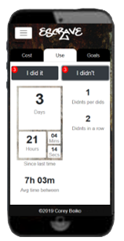

Take steps to control your guilty pleasure
escrave is an anonymous habit tracking web app which helps you incrementally achieve your goals.
escrave is an anonymous habit tracking web app which helps you incrementally achieve your goals.
You don’t have to specify what habit you’re tracking, and don’t need an account to use it.
More about privacyYou could be tracking anything from a very serious addiction to a slight annoyance, so the app remains impartial.
More about tracking habitsWith hard data about your usage, it’s easy to incrementally cut back to a level you’re comfortable with.
Methods to cut backCut back usage and spending of any habit using statistics built by escrave! The more you know, the easier it becomes to gain control of your habits. Escrave makes it easy to not let your behavior slip through the cracks in tangible terms.
By clicking a buy button when you make a habit-related purchase, you can track how much you spend over time, how long it’s been since the last time you’ve spent money on your habit, and how long on average you wait in between purchases. escrave also makes you a breakdown of what you've spent total, this week, this month, and this year.
By clicking on a button whenever you do your habit, you will be able to know the amount of time how long it's been since you last did it, and how long on average you wait. Simultaneously, escrave presents you with an option to click when you don’t do it. When you click for your resisted cravings, you can track the ratio between how often you give in to a craving versus successfully resisting a craving. Your body may already be subconsciously choosing not to give in to your cravings very often, without you noticing. escrave makes it more obvious, by telling you how many cravings you've resisted in a row.
escrave gives you the ability to declare goals, which subsequently start a countdown timer that you can refer to at any time to see the current amount of time left to complete your goal. Every time a goal ends, the app will automatically add it to a list of completed goals showing the date ended and the total amount of time elapsed. Goals can be ended early, if the user marks that they have spent money on their habit or done it. With the idea that any amount of progress is still progress, these goals are also added to your goal log!
escrave is available to use without creating an account and operates entirely on your personal device. This means that we do not store any of the data you create with it. The decentralized nature of data created by this app makes it much harder for other companies to collect or use.
As an added level of security and anonymity, you do not specify to escrave what you’re using it to track. That makes it easier to be honest with the app, as you are the only person judging yourself for how frequent you do it or how much you spend on it.
Examples of what to track
No matter how strong their resolution, people's habit(s) can start to get the best of them. If you're struggling to find something that you could track, this page can help you figure out what your guilty pleasure is. escrave can be used to track nearly anything you want in terms of doing or buying something less often. The app makes the most sense if your chosen habit is related to a specific action and can be spent money on. So try to think of things you do or spend more money on than you would like.
Try it now!When people fail at ‘quitting’ something, they tend to give up trying to quit entirely. So even if they lasted a lot longer than they normally do, they feel like they failed and so stop trying to achieve their goals. That’s why escrave is based on helping you make gradual improvements until you feel that you do your guilty pleasure at an acceptable amount, rather than being focused entirely on quitting.
You might say that opening escrave and entering in data every time you do or buy your guilty pleasure is too much of a time commitment. I would say that extra time commitment is directly in line with the purpose of this app. The longer you can wait, the greater the chance that you will be able to resist.
Whenever you open escrave to mark a behavior, you are presented with consciously committing to a choice to do or not to do. If you’ve made a conscious decision to cut back, being reminded of your own commitment at the last moment could be the difference between doing or not.
It’s not so difficult to know how much you spend on a habit, most people are already keeping track in their heads. You can probably convert the money into an approximation of how much you do your habit, however, figuring out how many times you consider doing it but decide not to, is nearly impossible without help. Recognizing those incremental successes is incredibly important, because they are entirely what your end goal is composed of. escrave helps you give that choice of inaction enough weight that it doesn’t slip through the cracks.
For escrave to be effective, you must consistently log your behaviors into it, so how can you get into the habit of opening escrave each time you do your guilty pleasure? First, you should figure out the physical location where you go to do/buy it. Then, put a reminder somewhere that you can see it. For example, if you are tracking cigarettes, a post-it note on your pack could do the trick.